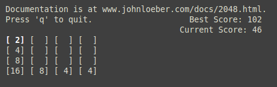

It is likely that you've heard about Gabriele Cirulli's smash hit, the game 2048. Now it's available at your command-line, too! Check out the GitHub repository.
This is what it looks like in my grey-themed terminal:

To play, use your arrow keys to merge blocks of the same number. Try to get to 2048. On every turn, a new number, either 2 or 4, spawns. It is marked in bold. If you're a vim-user, then you can also use h, j, k, l instead of the arrow keys.
I considered making the game colorful, but decided against it, since the game's colorscheme might conflict with a user's terminal's colorscheme. If you want to play a really fancy, colorful command-line 2048, then I suggest checking out term2048.
This work is licensed under a Creative Commons Attribution-NonCommercial-ShareAlike 4.0 International License.